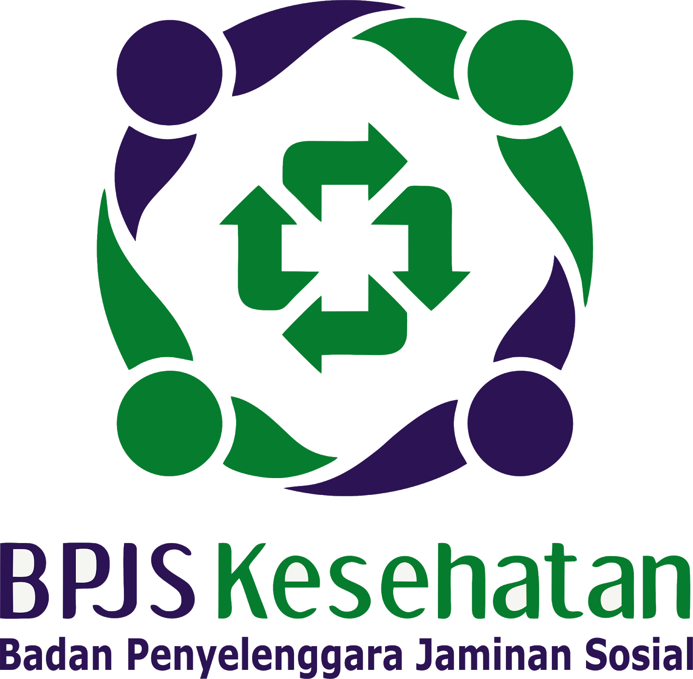

Klinik Girimukti Medical Center hadir di Singajaya, Kabupaten Garut dengan tenaga medis berpengalaman, fasilitas nyaman, serta layanan 24 jam untuk kebutuhan kesehatan Anda dan keluarga.
24 Jam
UGD, Ranap & Bersalin
JKN-KIS
Terdaftar BPJS Kesehatan
Tim Medis
Dokter, Bidan & Perawat
Klinik Pratama
Girimukti Medical Center

Rawat Jalan, Rawat Inap, UGD & Persalinan: 24 Jam
Pelayanan KIA: 07.00 – 17.00 WIB
Dokter umum, bidan, perawat, dan tenaga penunjang yang ramah serta berdedikasi tinggi.
Lingkungan klinik yang bersih, tertata, dan mengutamakan keselamatan serta kenyamanan pasien.
Komitmen dan nilai dasar yang mengarahkan setiap langkah pelayanan kami kepada masyarakat.
“Menjadi KLINIK Pilihan dan Kepercayaan Masyarakat”.
Memberikan pelayanan kesehatan yang berorientasi pada pelayanan dan kepuasan pasien.
Pelayanan kesehatan menyeluruh dengan informasi audio yang dapat Anda dengarkan langsung.
Konsultasi keluhan kesehatan, pemeriksaan fisik, dan pengobatan dasar secara menyeluruh.
Pemeriksaan kehamilan (ANC) dan edukasi kesehatan ibu & bayi. Jam layanan 07.00 – 17.00 WIB.
Layanan persalinan normal dan perawatan pasca melahirkan dengan bidan berpengalaman.
Penanganan kasus gawat darurat medis, observasi, dan perawatan penuh waktu.
Pemeriksaan penunjang seperti hematologi, kimia klinik, dan tes urin.
Menyediakan obat-obatan yang aman, terjangkau, dan sesuai dengan resep dokter.
Peserta JKN-KIS dapat berobat di Klinik Girimukti Medical Center sesuai ketentuan BPJS Kesehatan. Daftar antrean lebih praktis melalui Mobile JKN atau langsung di klinik.
Panduan pendaftaran antrean pelayanan BPJS Kesehatan melalui aplikasi Mobile JKN.
Informasi awal mengenai keluhan umum dan tips kesehatan harian untuk membantu keseharian Anda.
Kebiasaan sehat sederhana yang mudah diterapkan setiap hari bersama keluarga.
Klik tombol di bawah untuk menampilkan tips sehat hari ini.
Silakan hubungi kami untuk informasi pendaftaran, jadwal pelayanan, atau kebutuhan medis Anda.
“Pelayanan di sini cepat dan ramah. Dokter dan perawatnya sangat profesional. Hatur nuhun..!”
Cecep
Pasien Poli Umum
“Kliniknya bersih dan nyaman. Petugasnya informatif dan membantu. Terima kasih GMC!”
Putri
Pasien KIA